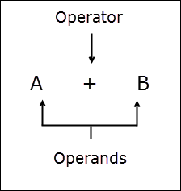
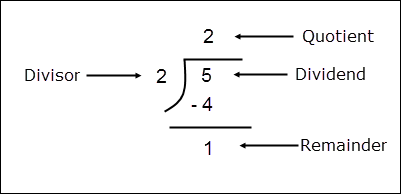

Operators in Python
Last updated on September 17, 2020
In this lesson, we will learn about expressions and various operators provided by Python.
Operator: An operator is a symbol which specifies a specific action.
Operand: An operand is a data item on which operator acts.

Some operators require two operands while others require only one.
Expression: An expression is nothing but a combination of operators, variables, constants and function calls that results in a value. For example:
1 2 3 4 5 6 7 | ## some valid expressions
1 + 8
(3 * 9) / 5
a * b + c * 3
a + b * math.pi
d + e * math.sqrt(441)
|
Let's start with Arithmetic Operators.
Arithmetic Operators #
Arithmetic operators are commonly used to perform numeric calculations. Python has following Arithmetic operators.
| Operator | Description | Example |
|---|---|---|
+ |
Addition operator | 100 + 45 = 145 |
- |
Subtraction operator | 500 - 65 = 435 |
* |
Multiplication operator | 25 * 4 = 100 |
/ |
Float Division Operator | 10 / 2 = 5.0 |
// |
Integer Division Operator | 10 / 2 = 5 |
** |
Exponentiation Operator | 5 ** 3 = 125 |
% |
Remainder Operator | 10 % 3 = 1 |
We use +, -and * operators in our daily life, so they don't deserve any explanation. However, the important thing to note is that + and - operators can be binary as well as unary. A unary operator has only one operand. We can use - operator to negate any positive number. For example: -5, in this case - operator is acting as a unary operator, whereas in 100 - 40, - operator is acting as a binary operator. Similarly, we can use unary + operator. For example, +4. As expression 4 and +4 are same, applying unary + operator in an expression generally has no significance.
Float Division Operator (/) #
The / operator performs a floating point division. It simply means that / returns a floating point result. For example:
1 2 3 4 5 6 7 8 9 10 11 12 13 14 15 | >>>
>>> 6/3
2.0
>>>
>>> 3.14/45
0.06977777777777779
>>>
>>>
>>> 45/2.5
18.0
>>>
>>>
>>> -5/2
-2.5
>>>
|
Integer Division Operator (//) #
The // operator works similar to / operator, but instead of returning a float value it returns an integer. For example:
1 2 3 4 5 6 7 | >>>
>>> 6//3
2
>>>
>>> 100//6
16
>>>
|
Unlike / operator, when the result is negative then // operator rounds the result away from zero to the nearest integer.
1 2 3 4 5 6 7 | >>>
>>> -5//2
-3
>>>
>>> -5/2
-2.5
>>>
|
Exponentiation Operator (**) #
We use ** operator to calculate a^b. For example:
1 2 3 4 5 6 7 | >>>
>>> 21**2
441
>>>
>>> 5**2.2
34.493241536530384
>>>
|
Remainder Operator (%) #
The % operator returns the remainder after dividing the left operand by the right operand. For example:
1 2 3 4 | >>>
>>> 5%2
1
>>>
|

The remainder operator % is a very useful operator in programming. One common use of % operator is to determine whether a number is even or not.
A number is even if it is exactly divisible by 2. In other words, a number is even if when divided by 2, leaves 0 as remainder. We will learn how to write such program in lesson If-else statement in Python.
Operator Precedence and Associativity #
Consider the following expression:
10 * 5 + 9
What will be its result?
If multiplication is performed before addition then the answer will be 59. On the other hand, if addition is performed before multiplication then the answer will be 140. To solve this dilemma, we use Operator Precedence.
Operators in Python are grouped together and given a precedence level. The precedence of operators is listed in the following table.
| Operator | Description | Associativity |
|---|---|---|
[ v1, … ], { v1, …}, { k1: v1, …}, (…) |
List/set/dict/generator creation or comprehension, parenthesized expression | left to right |
seq [ n ], seq [ n : m ], func ( args… ), obj.attr |
Indexing, slicing, function call, attribute reference | left to right |
** |
Exponentiation | right to left |
+x, -x, ~x |
Positive, negative, bitwise not | left to right |
*, /, //, % |
Multiplication, float division, integer division, remainder | left to right |
+, - |
Addition, subtraction | left to right |
<<, >> |
Bitwise left, right shifts | left to right |
& |
Bitwise and | left to right |
| | | Bitwise or | left to right |
in, not in, is, is not, <, <=, >, >=, !=, == |
Comparision, membership and identity tests | left to right |
not x |
Boolean NOT | left to right |
and |
Boolean AND | left to right |
or |
Boolean OR | left to right |
if-else |
Conditional expression | left to right |
| lambda | lambda expression | left to right |
The operators in the upper rows has the highest precedence and it decreases as we move towards the bottom of the table. Whenever we have an expression where operators involved are of different precedence, the operator with a higher precedence is evaluated first. So, in the expression 10 * 5 + 9 evaluation of * operator is performed first followed by evaluation of + operator.
1 2 3 | => 10 * 5 + 9 (multiplication takes place first)
=> 50 + 9 (followed by addition)
=> 59 (Ans)
|
Associativity of Operators #
In the precedence table operators in the same group have the same precedence, for example, (*, /, //, %) have the same precedence. Now consider the following expression:
5 + 12 / 2 * 4
From the precedence table we know that both / and * have higher precedence than +, but the precedence of / and * is same, so which operator do you think will be evaluated first / or * ?
To determine the order of evaluation when operator precedence is same we use Operator Associativity. Operator Associativity defines the direction in which operators of same precedence are evaluated, it can be either from left to right or right to left. Operators within same group have same associativity. As you can see in the table, the associativity of / and * is from left to right. So in the expression:
5 + 12 / 2 * 4
The / operator will be evaluated first, followed by * operator. At last + operator is evaluated.
1 2 3 4 | => 5 + 12 / 2 * 4 (/ operator is evaluated first)
=> 5 + 6 * 4 (then * operator is evaluated)
=> 5 + 24 (at last + operator is evaluated)
=> 29 (Ans)
|
The following are two noteworthy points to remember about the precedence table.
Associativity of most operators in the same group is from left to right except the exponentiation operator (
**). The associativity of the exponentiation operator (**) is from right to left.We sometimes use parentheses i.e
()to change the order of evaluation. For example:
2 + 10 * 4
In the above expression * will be performed first followed by +. We can easily change operator precedence by wrapping parentheses around the expression or sub-expression which we want to evaluate first. For example:
(2 + 10) * 4
As precedence of () operator is higher than that of * operator (see precedence table), addition will be performed first followed by *.
Here are some expressions and order in which they are evaluated:
Example 1:
1 2 3 4 5 6 | Expression: 10 * 3 + (10 % 2) ** 1
1st Step: 10 * 3 + 0 ** 1
2nd Step: 10 * 3 + 0
3rd Step: 30 + 0
4th Step: 30
|
Example 2:
1 2 3 4 5 | Expression: 45 % 2 - 5 / 2 + ( 9 * 3 - 1 )
1st Step: 45 % 2 - 5 / 2 + 26
2nd Step: 1 - 2.5 + 26
3rd Step: 24.5
|
Compound Assignment Operator #
In programming it is very common to increment or decrement the value of a variable and then reassign the value back to the same variable. For example:
1 2 | x = 10
x = x + 5
|
Initially value of x is 10. In the second expression, we have added 10 to the existing value of x and then reassign the new value back to x. So now the value of x is 15.
The second statement i.e x = x + 5 can be written in more succinctly manner using Compound Assignment Operator as follows:
x += 5
Here += is known as Compound Assignment Operator. The following table lists other Compound Assignment operators available in Python.
| Operator | Example | Equivalent Statement |
|---|---|---|
+= |
x += 4 |
x = x + 4 |
-= |
x -= 4 |
x = x - 4 |
*= |
x *= 4 |
x = x * 4 |
/= |
x /= 4 |
x = x / 4 |
//= |
x //= 4 |
x = x // 4 |
%= |
x %= 4 |
x = x % 4 |
**= |
x **= 4 |
x = x ** 4 |
Unlike other C based languages likes like Java, PHP, JavaScript; Python doesn't have Increment operator (++) and decrement operator (--). In those languages, ++ and -- operators are commonly used to increment and decrement the value of variable by 1 respectively. For example, to increment/decrement the value of a variable by 1 in JavaScript you would do something like this:
1 2 3 4 5 6 7 | x = 10;
x++; // increment x by 1
console.log(x); // prints 11
x = 10;
x--; // decrement x by 1
console.log(x); // prints 9
|
We can easily emulate this behavior using compound assignment operator as follows:
1 2 3 4 5 6 7 | x = 10
x += 1
print(x) ## prints 11
x = 10
x -= 1
print(x) ## prints 9
|
Type Conversion #
Upto this point, we haven't given much thought about the type of data we have been using in expression in Python Shell as well as in our programs. When it comes to performing calculation involving data of different types Python has following rules:
When both operands involved in an expression are
int, then the result will be anint.When both operand involved in an expression are
float, then the result will be afloat.When one operand is of
floattype and other is of typeintthen the result will always be afloatvalue. In such cases, the Python interpreter automatically converts theintvalue tofloattemporarily, then performs the calculation. This process is known as Type Conversion.
Here are some examples:
1 2 3 4 5 6 7 8 9 10 11 12 13 14 | >>>
>>> 45 * 3
135 # result is int because both operands are int
>>>
>>>
>>>
>>> 3.4 * 5.3
18.02 # result is float because both operands are float
>>>
>>>
>>>
>>> 88 * 4.3
378.4 # result is float because one operand is float
>>>
|
In the last expression literal 88 is first converted to 88.0, and then the multiplication is carried out.
Sometimes, it is desirable to convert data from one type to a different type at our will. To handle such situations Python provides us the following functions:
| Function Name | Description | Example |
|---|---|---|
int() |
It accepts a string or number and returns a value of type int. |
int(2.7) returns 2, int("30") returns 30 |
float() |
It accepts a string or number and returns a value of type float |
float(42) returns 42.0, float("3.4") returns 3.4 |
str() |
It accepts any value and returns a value type str |
str(12) returns "12", str(3.4) returns "3.4" |
Here are some examples:
int() function #
1 2 3 4 5 6 7 | >>>
>>> int(2.7) # convert 2.7 to int
2
>>>
>>> int("30") # convert "30" to int
30
>>>
|
Note that when int() function converts a float number to int, it simply remove the digits after the decimal point. If you want to round a number use the round() function.
1 2 3 4 5 6 | >>>
>>> int(44.55)
44
>>> round(44.55)
45
>>>
|
float() function #
1 2 3 4 5 6 7 | >>>
>>> float(42) # convert 42 to float
42.0
>>>
>>> float("3.4") # convert "3.4" to float
3.4
>>>
|
str() function #
1 2 3 4 5 6 7 | >>>
>>> str(12) # convert 12 to str
'12'
>>>
>>> str(3.4) # convert 3.4 to str
'3.4'
>>>
|
Breaking Statements into Multiple Lines #
All the statements we have written until now are limited to one line. What if your statement becomes too long ?
Typing long statements in one line is very hard to read on screen as well as on paper.
Python allows us to break long expression into multiple lines using line continuation symbol ( \ ). The \ symbol tells the Python interpreter that the statement is continued on the next line. For example:
1 2 3 4 5 6 | >>>
>>> 1111100 + 45 - (88 / 43) + 783 \
... + 10 - 33 * 1000 + \
... 88 + 3772
1082795.953488372
>>>
|
To expand a statement to multiple lines type the line continuation symbol ( \ ) at the point where you want to break the statement and hit enter.
When Python Shell encounters a statement which expands to multiple lines, it changes prompt string from >>> to ... . When you are done typing the statement hit enter to see the result.
Here is another example which breaks the print() statement into multiple lines :
1 2 3 4 5 6 7 | >>>
>>> print("first line\
... second line\
... third line")
first line second line third line
>>>
>>>
|
The following example shows how to write multi-line statements in a Python script.
python101/Chapter-06/multiline_statements.py
1 2 3 4 5 6 7 8 9 | result = 1111100 + 45 - (88 / 43) + 783 \
+ 10 - 33 * 1000 + \
88 + 3772
print(result)
print("first line\
second line\
third line")
|
Output:
1 2 | 1082795.953488372
first line second line third line
|
bool Type #
The bool data type represent two states i.e true or false. Python defines the values true and false using the reserved keywords True and False respectively. A variable of type bool can only contain one of these two values. For example:
1 2 3 4 5 6 7 8 9 10 11 12 13 14 15 16 17 18 19 20 21 22 23 | >>>
>>> var1 = True
>>> var2 = False
>>>
>>> type(var1)
<class 'bool'> # type of var1 is bool
>>>
>>> type(var2)
<class 'bool'> # type of var2 is bool
>>>
>>>
>>> type(True)
<class 'bool'> # type of True keyword is bool
>>>
>>> type(False)
<class 'bool'> # type of False keyword is bool
>>>
>>> var1
True
>>>
>>> var2
False
>>>
|
An expression which evaluates to a bool value True or False is known as boolean expression.
We commonly use bool variables as flags. A flag is nothing but a variable which signals some condition in the program. If flag variable is set to False then it means that the condition is simply not true. On the other hand, if it is True then it means condition is true.
Internally, Python uses 1 and 0 to represent True and False respectively. We can verify this fact by using int() function on True and False keywords as follows:
1 2 3 4 5 6 7 | >>>
>>> int(True) # convert keyword True to int
1
>>>
>>> int(False) # convert keyword False to int
0
>>>
|
Truthy and Falsy Values #
Truthy values: Values which are equivalent to bool value True is known as Truthy values.
Falsy values: Values which are equivalent to bool value False is known as Falsy values.
In Python, the following values are considered as falsy.
NoneFalse- Zero i.e
0,0.0 - Empty sequence, for example,
'',[],() - Empty dictionary i.e
{}
Note: Sequence and dictionary are discussed in later chapters.
Everything else is considered as truthy . We can also test whether a value is truthy or falsy by using the bool() function. If value a truthy then bool() function returns True, otherwise it returns False. Here are some examples:
1 2 3 4 5 6 7 8 9 10 11 12 13 14 15 16 17 18 19 20 21 22 | >>>
>>> bool("") # an empty string is falsy value
False
>>>
>>> bool(12) # int 12 is a truthy value
True
>>>
>>> bool(0) # int 0 is falsy a value
False
>>>
>>> bool([]) # an empty list is a falsy value
False
>>>
>>> bool(()) # an empty tuple is a falsy value
False
>>>
>>> bool(0.2) # float 0.2 is truthy a value
True
>>>
>>> bool("boolean") # string "boolean" is a truthy value
True
>>>
|
The significance of truthy and falsy values will become much more clear in the upcoming lessons.
Relational Operators #
To compare values we use relational operators. Expression containing relational operators are known as relational expressions. If expression is true then a bool value True is returned and if the expression is false a bool value False is returned. Relational operators are binary operators. The following table lists relational operators available in Python.
| Operator | Description | Example | Return Value |
|---|---|---|---|
< |
Smaller than | 3 < 4 |
True |
> |
Greater than | 90 > 450 |
False |
<= |
Smaller than or equal to | 10 <= 11 |
True |
>= |
Greater than or equal to | 31 >= 40 |
False |
!= |
Not equal to | 100 != 101 |
True |
== |
Equal to | 50==50 |
True |
1 2 3 4 5 6 7 8 9 10 11 12 13 14 15 16 17 18 19 | >>>
>>> 3 < 4 # Is 3 is smaller than 4 ? Yes
True
>>>
>>> 90 > 450 # Is 90 is greater than 450 ? No
False
>>>
>>> 10 <= 11 # Is 10 is smaller than or equal to 11 ? Yes
True
>>>
>>> 31 >= 40 # Is 31 is greater than or equal to 40 ? No
False
>>>
>>> 100 != 101 # Is 100 is not equal to 101 ? Yes
True
>>>
>>> 50 == 50 # Is 50 is equal to 50 ? Yes
True
>>>
|
Beginners often confuse between == and = operators. Always remember = is an assignment operator and is used to assign a value to the variable. On the other hand, == is a equality operator and is used to test whether two values are equal or not.
Logical Operators #
Logical operators are used to combine two or more boolean expressions and tests whether they are true or false. Expressions containing logical operators are known as Logical expressions. The following table lists logical operators available in Python.
| Operator | Description |
|---|---|
and |
AND operator |
or |
OR operator |
not |
NOT operator |
The and and or are binary operators, while not is unary.
and Operator #
The and operator returns a bool value True if both operands are true. Otherwise, it returns False.
Syntax: operand_1 and operand_2
The truth table for and operator is as follows:
| operand_1 | operand_2 | Result |
|---|---|---|
False |
False |
False |
False |
True |
False |
True |
False |
False |
True |
True |
True |
Here are some examples:
| Expression | Intermediate Expression | Result |
|---|---|---|
(10>3) and (15>6) |
True and True |
True |
(1>5) and (43==6) |
False and False |
False |
(1==1) and (2!=2) |
True and False |
False |
1 2 3 4 5 6 7 8 9 10 | >>>
>>> (10>3) and (15>6) # both conditions are true so, the result is true
True
>>>
>>> (1>5) and (43==6) # both conditions are false so, the result is false
False
>>>
>>> (1==1) and (2!=2) # one condition is false(right operand) so, the result is false
False
>>>
|
The precedence of relational operators (i.e >, >=, <, <=, == and !=) is greater than that of and operator, so parentheses in the above expressions is not necessary, it is added here just to make the code more readable. For example:
1 2 3 4 5 6 7 | >>>
>>> (10>3) and (15>6)
True
>>>
>>> 10 > 3 and 15 > 6 # this expression is same as above
True
>>>
|
As you can see, the expression (10>3) and (15>6) is much more clearer than 10 > 3 and 15 > 6.
In and operator, if the first operand is evaluated to False, then the second operand is not evaluated at all. For example:
1 2 3 4 | >>>
>>> (10>20) and (4==4)
False
>>>
|
In this case, (10>20) is False, and so is the whole logical expression. Hence there is no need to evaluate the expression (4==4).
or operator #
The or operator returns False when both operands are False. Otherwise, it returns True. It's syntax is:
Syntax: operand_1 or operand_2
The truth table for or operator is as follows:
| operand_1 | operand_2 | Result |
|---|---|---|
False |
False |
False |
False |
True |
True |
True |
False |
True |
True |
True |
True |
Here are some examples:
| Expression | Intermediate Expression | Result |
|---|---|---|
(100<200) or (55<6) |
True or False |
True |
(11>55) or (6==6) |
False or True |
True |
(1>12) or (2==3) |
False or False |
False |
(10<22) or (20>3) |
True or True |
True |
1 2 3 4 5 6 7 8 9 10 11 12 13 | >>>
>>> (100<200) or (55<6)
True
>>>
>>> (11>55) or (6==6)
True
>>>
>>> (1>12) or (2==3)
False
>>>
>>> (10<22) or (20>3)
True
>>>
|
In or operator, if the first operand is evaluated to True, then the second operand is not evaluated at all. For example:
1 2 3 4 | >>>
>>> (100>20) or (90<30)
True
>>>
|
In this case, (100>20) is True, and so is the whole logical expression. Hence there is no need to evaluate the expression (90<30).
The precedence of or operator is less than that of and operator.
not Operator #
The not operator negates the value of the expression. In other words, if the expression is True, then not operator returns False and if it is False, it returns True. Unlike the other two logical operators, the not is a unary operator. The precedence of not operator is higher than that of and operator and or operator. Its syntax is:
Syntax: not operand
The truth table for not operator is as follows:
| operand | Result |
|---|---|
True |
False |
False |
True |
Here are some examples:
| Expression | Intermediate Expression | Result |
|---|---|---|
not (200==200) |
not True |
False |
not (10<=5) |
not False |
True |
1 2 3 4 5 6 7 | >>>
>>> not (200==200)
False
>>>
>>> not (10<=5)
True
>>>
|
Load Comments